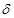

МИНИСТЕРСТВО МОНТАЖНЫХ И СПЕЦИАЛЬНЫХ
СТРОИТЕЛЬНЫХ РАБОТ СССР
|
УТВЕРЖДАЮ: заместитель министра монтажных и специальных строительных работ СССР К.К. Липодат 14 января 1986 г. |
МОНТАЖ КОНСТРУКЦИЙ
ОДНОЭТАЖНЫХ ПРОМЫШЛЕННЫХ ЗДАНИЙ
С ПРОСТРАНСТВЕННЫМ РЕШЕТЧАТЫМ
ПОКРЫТИЕМ ИЗ ТРУБ
(типа "Кисловодск")
|
ВСН 356-86 |
||
|
Минмонтажспецстрой СССР |
Центральное бюро научно-технической информации
Москва-1986
АННОТАЦИЯ
Настоящие нормы разработаны ВНИПИ Промстальконструкция (руководитель темы И.Г. Сергачев, ответственный исполнитель В.А. Шелест).
С введением в действие ВСН 356-86/Минмонтажспецстрой СССР утрачивает силу ВСН 356-75/Минмонтажспецстрой СССР.
ОГЛАВЛЕНИЕ
|
1. |
|
|
2. |
|
|
3. |
|
|
4. |
|
|
5. |
|
|
6. |
|
|
7. |
|
|
8. |
|
|
Приложение. Механизированный и ручной инструмент для монтажа металлоконструкций |
|
|
Министерство монтажных и специальных строительных работ СССР (Минмонтажспецстрой СССР) |
Ведомственные строительные нормы |
ВСН 356-86 |
|
Минмонтажспецстрой СССР |
||
|
Монтаж конструкций одноэтажных промышленных зданий с пространственным решетчатым покрытием из труб (типа "Кисловодск" ) |
Взамен ВСН 356-75 |
|
|
Минмонтажспецстрой СССР |
1.1. Настоящие нормы распространяются на монтаж и приемку конструкций одноэтажных промышленных зданий (модулей) размерами в плане 30´30 м с пространственным решетчатым блоком покрытия из труб размерами 27´27 м (сетка колонн 18´18 м). Компоновочная схема и узлы показаны на рис. 1-5.
1.2. Нормы предназначены для работников проектных и строительно-монтажных организаций, осуществляющих монтаж конструкций одноэтажных промышленных зданий с пространственным решетчатым покрытием из труб (типа "Кисловодск").
1.3. Монтажные работы следует производить только в соответствии с утвержденным проектом производства работ (ППР). ППР разрабатывает специализированная проектная или монтажная организация. Проект должен быть согласован с генподрядной строительной организацией в части стройгенплана и календарного графика работ и утвержден монтажным управлением в порядке, установленном "Инструкцией по разработке проектов производства работ по монтажу строительных конструкций" ВСН 193-81/ММСС СССР.
1.4. ПНР разрабатывают на основании чертежей КЦЦ с максимальным использованием прогрессивных методов работы.
1.5. Организация, выполняющая монтажные работы, обязана обеспечить соответствие выполненных работ чертежам КМД, ПИР и требованиям настоящих норм. Всякое отступление от ППР должно быть согласовано с организацией, его разработавшей.
1.6. Работы по монтажу конструкций необходимо выполнять с соблюдением требований по технике безопасности при монтаже стальных и железобетонных констатации.
|
Внесены Главстальконструкцией |
Утверждены Минмонтажспецстроем СССР 14 января 1986 г. |
Срок введения в действие 1 июля 1996 г, |
Рис. 1. Схема здания (модуля):
1 - блок покрытия; 2 - колонна; 3 - панели стенового ограждения; 4 - объемный блок сантехкабины БСТО-1; 5 - электропомещение КЭМЗ-IП; 6 - агрегат вентиляционно-приточный ВПА-40
Рис. 2. 0порный узел блока покрытия
Рис. 3. Опорный узел колонны:
1 - колонна; 2 - обетонировка; 3 - цементная подливка
Рис. 4. Деталь крепления настила к ограждающей конструкции:
1 - панель стенового ограждения; 2 - самонарезающие винты В6´25 в каждой волне; 3 - профилированный настил; 4 - ригель фахверка
Рис. 5. Деталь крепления прогона к ограждающей конструкции:
1 - панель стенового ограждения; 2 - самонарезающие винты В6´25; 3 - профилированный настил; 4 - прогон покрытия; 5 - ригель фахверка
1.7. Применять все виды кислородной резки на всех стадиях монтажных работ, а также дуговую сварку, не предусмотренную проектом, запрещается.
1.8. При монтаже конструкций следует вести журнал монтажных работ, в котором ежедневно фиксировать условия и объемы работ, выполняемых отдельными звеньями рабочих.
1.9. Работы по монтажу систем вентиляции, санитарно-технических устройств и электротехнического оборудования выполняются в соответствии с технологией, разработанной специализированными организациями.
1.10. Рабочие всех специальностей, занятые монтажом конструкций, должны пройти техническое обучение по выполняемой работе, обучение правилам безопасного ведения работ в соответствии с требованиями ГОСТ 12.0.004-79, а также инструктаж в соответствии с главой СНиП III-4-80.
1.11. Руководство монтажными работами должно осуществляться лицами, имевшими право на производство этих работ, назначенными администрацией строительно-монтажной организации.
1.12. Квалификация, права и обязанности руководителей работ должны соответствовать положениям о производителе работ, мастере и бригадире, утвержденным Госстроем СССР и Минмонтажспецстроем СССР.
1.13. Разрешение на производство монтажных работ оформляют в журнале производства работ за подписью главного инженера или начальника управления.
1.14. При разработке ППР следует пользоваться "Типовым ППР по монтажу унифицированных зданий (модулей) из пространственных конструкций. Здание типа "Кисловодск" МКС-30-6-30-ВД. Шифр 52234Т", разработанным ВНИПИ Промстальконструкция.
1.15. Перечень механизированного и ручного инструмента для монтажа металлоконструкций приведен в приложении.
2.1. Все стальные конструкции здания должны быть изготовлены в полном соответствии с чертежами КМД, требованиями нормативных документов и настоящих норм.
2.2. Завод-изготовитель стальных конструкций по окончании изготовления всего заказа или его части должен выдать паспорт на стальные конструкции.
2.3. При установлении подрядчиком случаев некомплектности стальных конструкций здания (модуля) при их приемке, а в процессе монтажа - дефектов, подрядчик ставит об этом в известность заказчика и принимает участие в составлении акта. Составление актов, предъявление претензий и исков заводу-изготовителю является обязанностью заказчика.
2.4. Подача стальных конструкций здания (модуля) от приобъектного склада в зону монтажа производится субподрядчиком.
2.5. Складирование конструкций следует производить согласно требованиям главы СНиП III-4-80 и СНиП III-18-75.
2.6. Конструкции покрытия должны поставляться окрашенными на заводе-изготовителе в соответствии с указаниями проекта. Опорные раскосы необходимо окрашивать в контрастный цвет.
2.7. Транспортировать конструкции следует по маркам, в заводской упаковке, обеспечивающей их комплектность, удобство погрузочно-разгрузочных работ и складирования.
2.8. Приемку прибывающих на монтажную площадку стальных конструкций здания (модуля), их складирование и хранение производит субподрядчик.
Субподрядчик должен обеспечить входной контроль качества поступающих конструкций согласно СТП.
2.9. При входном контроле следует проверить наличие пробок, предохраняющих резьбовые отверстия узловых элементов от повреждения и попадания влаги и грязи.
2.10. Входной контроль качества получаемых от заказчика металлоконструкций должны производить мастера и бригадиры путем внешнего осмотра и сопоставления с чертежами КМ и КМД с последующим занесением результатов контроля в журналы промежуточной приемки, а также в исполнительную документацию на монтажные работы.
2.11. При погрузке и разгрузке конструкций следует соблюдать указанную в проекте схему их строповки и расположения на транспортных средствах.
2.12. Конструкции на складе должны быть рассортированы по маркам и улажены с учетом очередности монтажа. Заводская маркировка элементов должна быть обращена в сторону проходов.
2.13. Элементы конструкций, поступающие на строительную площадку, должны иметь хорошо видимую маркировку и клеймо ОТК предприятия-изготовителя.
2.14. Строповку, внутриплощадочное транспортирование и погрузку готовых элементов на транспортные средства следует выполнять с помощью приемов, исключающих образование остаточных деформаций, вмятин и обеспечивающих сохранность окраски.
3.1. Монтажная организация приступает к укрупнительной сборке и установке конструкций после выполнения подготовительных работ и составления акта их приемки.
Должны быть выполнены следующие работы:
получен полный комплект документации на весь объем работ;
проведена обратная засыпка пазух фундаментов, сдача фундаментов и инженерных сетей нулевого цикла (требования к фундаментам см. п.п. 3.5; 3.6);
выполнена бетонная подготовка под полы;
спланированы необходимые площадки для складирования конструкций;
устроены постоянные автодороги, которые будут использоваться на период строительства;
обеспечен отвод поверхностных вод с территории строительной площадки;
подведена электроэнергия к пунктам питания;
устроено освещение строительной площадки;
обозначены знаками безопасности и надписями установленной формы опасные для людей зоны;
обозначены пешеходные дорожки для прохода рабочих в зону монтажа;
установлен забор, исключающий доступ посторонних лиц на монтажную площадку;
выполнена комплектная поставка конструкций.
3.2. К производству монтажных работ следует приступать только после 100-процентной готовности нулевого цикла (фундаментов) всего сооружения или отдельных его частей, указанных в ППР.
3.3. Разбивочные оси, необходимые для монтажа стальных конструкций, должны быть нанесены на металлические детали, расположенные на поверхности фундаментов вне контура опоры конструкций.
3.4. Монтажная организация должна принять фундаменты по акту до начала работ по монтажу конструкций.
3.5. Предельное отклонение положения разбивочных осей фундаментов и других мест опирания конструкций от проекта должно не превышать следующих значений, мм, при интервале размеров между осями, м:
|
до 9 |
± 3 |
|
св. 9 до 15 |
± 4 |
|
св. 15 до 21 |
± 5 |
3.6. Отклонение поверхности фундаментов и положения фундаментных болтов от проекта должно не превышать следующих значений, мм:
|
поверхности фундамента: |
|
|
по высоте |
± 5 |
|
по уклону |
1/1000 |
|
анкерных болтов |
|
|
в плане: |
|
|
расположенных внутри контура опоры конструкций |
5 |
|
вне контура опоры |
10 |
|
отметки верхнего торца анкерного болта |
+20 мм; - 0 |
|
длины нарезки анкерного болта |
+30 мм; - 0 |
3.7. Резьба анкерных болтов должна быть предохранена от повреждений и коррозии.
3.8. Работы по подливке пространства между поверхностью фундамента и опорной частью колонн следует выполнять после выверки и составления геодезической схемы положения колонн в алане и по высоте.
3.9. Монтировать конструкции разрешается только после инструментальной проверки соответствия проекту отметок и положения в плане фундаментов, а также после их приемки.
3.10. Проверку и приемку опорных конструкций и закладных деталей производят представители заказчика, строительной и монтажной организаций с составлением акта и приложением исполнительной схемы.
4.1. Укрупнение конструкций покрытия в блоки следует производить у места подъема на выверенных по высоте и в плане монтажных опорах в такой последовательности (рис. 6, 7):
нанести оси блока на бетонную подготовку под полы;
установить и выверить пять опор № 1;
собрать центральную часть блока размерами 15´15 м;
установить и выверить дополнительные три опоры № 2;
блок укрупнить до размера 21´21 м;
переставить и выверить опоры № 1;
блок укрупнить до размера 27´27 м;
произвести выверку геометрических размеров блока;
установить прогоны и настил с полным проектным закреплением.
4.2. Сборку блока следует производить от центра к краям путем последовательного присоединения элементов в такой последовательности: элементы нижнего пояса, элементы наклонные с узловыми деталями верхнего пояса, элементы верхнего пояса. Замыкание очередного пояса следует выпал-нить на элементе, не требующем плотного примыкания муфты к узловому элементу.
4.3. Отклонение верха монтажных опор в местах опирания узловых элементов нижнего пояса должно не превышать ± 5 мм.
4.4. Узловые элементы перед подачей на сборку должны быть очищены от консервирующей смазки.
4.5. Особое внимание при сборке необходимо обратить на взаимную ориентацию палок прогонов и постановку самонарезающих винтов для крепления профилированного настила.
4.6. В процессе сборки резьбовые отверстия узловых элементов необходимо предохранять от попадания песка и грязи. При сборке торцовые поверхности шестигранных муфт стержней и контактирующие с ними поверхности узловых элементов необходимо протирать.
4.7. Болты стержней перед ввинчиванием в узловые элементы должны быть выведены из стержней до упора, очищены от консервирующей смазки и окрашены железным суриком.
4.8. Незначительные забоины болтов стержней из труб диаметрами 60; 76 и 114 мм, вызванные ударами при транспортировании или хранении, должны быть устранены надфилями треугольного сечения.
4.9. Исправление резьбы в стержнях из труб диаметром 102 мм не допускается. Стержни подлежат замене.
4.10. Перемещать волоком элементы конструкций и конструкции в сборе категорически запрещается.
4.11. В процессе сборки блока необходимо обеспечить плотное примыкание шестигранных муфт к поверхности узловых элементов.
Для некоторых элементов блока допускается касание с суммарным зазором не более 2 мм на одну муфту. Схема расположения стержней показана на рис. 8, 9. При сборке блока следует выполнить исполнительную схему установки стержней.
Рис. 6. Последовательность сборки блока покрытия СП 27-300 (350):
1 - опора № 1, 2 - опора № 2
Рис. 7. Последовательность сборки блока покрытия СП 27-300 (350) А
Рис. 8. Схема расположения стержней с различным примыканием шестигранных муфт к узловым элементам. Блок СП 27-300 (350)
4.12. Затяжку высокопрочных болтов следует производить гаечным ключом, надеваемым на шестигранные муфты. Длина рукоятки ключа должна быть 450-500 мм (крутящий момент затяжки 800 кгс×см). О превышении крутящего момента свидетельствует срез штифта.
4.13. Болты всех стержней должны быть затянуты до упора.
О глубине завинчивания свидетельствует положение штифта в прорези шестигранной муфты и невозможность смещения трубы рукой относительно болта.
4.14. При срезе штифта в стержнях с обязательным плотным примыканием штифт заменяют новым и повторно производят затяжку. При невозможности обеспечения плотного примыкания таким способом необходимо стержень заменить одноименным и добиться плотного примыкания элементов. Снятый стержень можно установить в месте, допускающем зазор.
Рис
.9. Схема расположения стержней с различным примыканием шестигранных муфт к
узловым элементам.
Блок СП 27-300 (350) А
4.15. Плотность примыкания шестигранной муфты к поверхности узловых элементов проверяют щупом толщиной 0,1 мм, который не должен входить в глубину опорной поверхности.
4.16. Категорически запрещается приварка шестигранных муфт к узловым элементам и торцам стержней.
4.17. Перед подъемом укрупненного блока покрытия следует произвести контроль сборки и составить акт, разрешающий подъем и установку блока.
4.18. Допускается крепить профилированный настил дюбелями и с помощью сварки с соблюдением антикоррозионной защиты.
5.1.1. Схема подъема и установки блока покрытия с помощью двух кранов показана на рис. 10.
5.1.2. Перед установкой стальных конструкций их опорные поверхности, а также поверхности примыкающих элементов необходимо очистить от грязи, ржавчины, масла, снега и т.д.
Рис.10. Схема подъема и установки блока покрытия с помощью двух кранов:
1 - траверса; 2 - кран МКА-16 со стрелой 15 м
5.1.3. До подъема блоков в проектное положение колонны здания должны быть смонтированы и закреплены в соответствии с проектом.
5.1.4. Проектное положение стальной колонны достигается совмещением рисок на ее нижнем торце с рисками закладных деталей фундамента.
5.1.5. Расстрапливать стальную колонну можно только после ее закрепления анкерными болтами.
5.1.6. Отклонение конструкций стальных колонн от проектного положения должно не превышать следующих значений, мм:
|
отметки опорной поверхности колонн |
± 5 |
|
осей колонн относительно разбивочных осей (в нижнем сечении) |
± 5 |
|
осей колонн от вертикали в верхнем сечении |
± 15 |
5.1.7. Необходимо следить за соблюдением размеров сдвига блока покрытия относительно колонн при укрупнительной сборке (рис.10).
5.1.8. Строповка укрупненного блока покрытия производится специальной траверсой за нижние соединительные элементы в местах, предусмотренных проектом (рис.13).
5.1.9. Перед применением траверсы ее необходимо испытать на нагрузку, в 1,25 раза превышающую расчетную.
5.1.10. При подъеме и установке блока покрытия необходимо строго следить за обеспечением синхронности работы кранов.
5.1.11. Для обеспечения контроля за равномерностью подъема блока покрытия на колонны необходимо нанести по высоте контрольные риски через определенные интервалы.
5.1.12. До установки блока покрытия на колонны людям находиться под поднимаемым блоком ЗАПРЕЩАЕТСЯ.
5.2.1. Схема подъема и установки блока покрытия краном и шевром показана на рис. 11.
5.2.2. При укрупнительной сборке блока покрытия необходимо следить за соблюдением размеров сдвига блока относительно колонн.
5.2.3. Отклонение конструкций стальных колонн от проектного положения должно не превышать значений, указанных в п. 5.1.6.
5.2.4. Строповка укрупненного блока покрытия производится специальной траверсой за нижние соединительные элементы в местах, предусмотренных проектом (рис. 13).
5.2.5. При подъеме и установке блока покрытия на колонны необходимо следить за обеспечением синхронной работы крана и шевра.
5.2.6. Обеспечение сохранения размеров сдвига блока покрытия относительно колонн в процессе подъема и установки достигается одновременной работой двух пар оттяжек, закрепленных к ручным рычажным лебедкам.
5.2.7. Для обеспечения контроля за равномерностью подъема блока покрытия на колонны необходимо нанести по высоте контрольные риски через определенные интервалы.
5.2.8. До установки блока покрытия на колонны людям находиться под поднимаемым блоком ЗАПРЕЩАЕТСЯ.
5.3.1. Схема подъема и установки блока покрытия с помощью надколонников показана на рис. 12.
5.3.2. При укрупнительной сборке блока покрытия необходимо следить за соблюдением размера сдвига блока относительно колонн.
Рис. 11. Схема подьема и установки блока покрытия с помощью шевра и крана:
1, 3 - якоря накладные соответственно тяговым усилием 40 и 63 кН; 2 - электролебедка тяговым усилием 30 кН; 4 - винтовая стяжка тяговым усилием 100 кН; 5 - отводной блок тяговым усилием 50 кН: 6 - шевр Q = 16 т; 7 - автокран МКА-16 со стрелой 15 м; 8 - рычажная лебедка тяговым усилием 30 кН; 9 - траверса
Рис. 12. Схема подъема и установки блока покрытия с помощью надколонников:
1 - подъемная электролебедка тяговым усилием 30 кН; 2 - тяговый канат; 3 - блок покрытия; 4 - оттяжка; 5 - ручная лебедка; 6 - надколонник
Рис. 13. Схема строповки блока покрытия при монтаже конструкций с помощью крана и шевра:
1 - грузовой полипаст монтажного механизма; 2 - строп; 3 - траверса; 4 - шпилька с гайкой; 5 - узловой элемент нижнего пояса блока покрытия
Рис .14. Схема строповки блока покрытия при монтаже конструкций с помощью надколонников:
1 - грузовой полиспаст монтажного механизма; 2 - узловой элемент блока покрытия; 3 - рым-болт
5.3.3. Отклонение конструкций стальных колонн от проектного положения должно не превышать значений, указанных в п. 5.1.6.
5.3.4. Строповка укрупненного блока покрытия производится с помощью специальных рым-болтов, устанавливаемых в опорных узлах (рис. 14).
5.3.5. При подъеме и установке блока покрытия на колонны необходимо следить за синхронной работой подъемных электролебедок.
5.3.6. Обеспечение сохранения размеров сдвига блока относительно колонн в процессе подъема и установки достигается работой двух оттяжек, закрепленных к ручным лебедкам.
5.3.7. Для обеспечения контроля за равномерностью подъема блока покрытия на колонны необходимо нанести по высоте контрольные риски через определенные интервалы.
5.3.8. До установки блока на колонны людям находиться под поднимаемым блоком ЗАПРЕЩАЕТСЯ.
6.1. Технология укрупнительной оборки и монтажа стальных панелей стенового ограждения должна быть разработана в ППР.
6.2. К монтажу ограждающих конструкций разрешается приступать только после монтажа и закрепления в соответствии с проектом всех несущих конструкций каркаса здания и блоков покрытия.
6.3. До подъема стеновые панели и ригели укрупняются в блоки на инвентарном стенде непосредственно у мест монтажа (размеры блока 3´6 м).
6.4. Площадки для установки инвентарного стенда должны быть заранее спланированы и утрамбованы.
6.5. Стенд по ходу монтажа переставляется краном на последующие стоянки.
6.6. При строповке стеновых панелей, имеющих выступы за верхний опорный ригель, к стропу при снятии панели со стенда закрепить деревянную подкладку на границе соприкасания со стеновыми панелями с целью равномерного распределения нагрузки от стропов в процессе подъема.
6.7. Оформление узлов примыкания стеновых панелей (переплетов) к колоннам или стойкам фахверка осуществляется о подмостей, расположенных с наружной и внутренней сторон здания.
7.1. Приемка смонтированных стальных конструкций должна производиться с осуществлением пооперационного контроля монтажных работ:
промежуточного контроля - на стадии скрытых работ;
контроля смонтированных конструкций всего сооружения или его части - на стадии укрупнительной сборки;
окончательного контроля - на стадии сдачи объекта в эксплуатацию.
7.2. Промежуточной приемке скрытых работ подлежат фундаменты, зазор между муфтами и опорными узлами, смазка болтов железным суриком.
7.3. Приемка скрытых работ, а также смонтированных конструкций под производство следующих строительно-монтажных работ производится в соответствии с актами, составляемыми представителями заказчика, строительной и монтажной организаций.
7.4. Приемка монтажной организацией фундаментов и мест опирания стальных конструкций под производство монтажных работ должна производиться отдельными пространственно-жесткими секциями до начала монтажа конструкций.
7.5. Приемка строительной организацией и заказчиком смонтированных конструкций всего сооружения или отдельных его секций должна осуществляться после окончательного закрепления конструкций в соответствии с проектом.
7.6. Приемка соединительных узлов конструкций покрытия производится до окраски, выполняемой на монтаже. Окраска оформляется отдельным актом.
7.7. Отклонение смонтированных стальных конструкций от проектного положения должно не превышать значений, указанных в СНиП III-18-75 и настоящих нормах.
7.8. Не разрешается производство каких-либо последующих строительно-монтажных работ до подписания актов в соответствии с п. 7.3 настоящей главы.
8.1. При производстве работ следует соблюдать все требования СНиП III-4-80 и ППР.
8.2. Организация строительной площадки, участков работ и рабочих мест должна обеспечивать безопасность труда работающих на всех этапах выполнения работ.
8.3. Опасные зоны должны быть обозначены знаками безопасности и надписями установленной формы.
8.4. Строительная площадка в населенных местах или на территории действующих предприятий во избежание доступа посторонних лиц должна быть ограждена. Конструкции ограждения должны удовлетворять требованиям ГОСТ 23407-78.
8.5. Складирование материалов, конструкций и оборудования должно осуществляться в соответствии с требованиями стандартов или технических условий на материалы, изделия и оборудование.
8.6. До начала работ с применением машин руководитель работ должен определить способы взаимодействия и сигнализации машиниста (оператора) с рабочим-сигналыциком, обслуживающим машину, определить (при необходимости) место нахождения сигнальщика, а также обеспечить надлежащее освещение рабочей зоны.
8.7. Средства подмащивания и другие приспособления, обеспечивающие безопасность производства работ, должны соответствовать требованиям ППР, СНиП III-4-80, ГОСТ 12.2.012-75, ГОСТ 24259-80 и ГОСТ 24258-80.
8.8. Поверхность грунта, на которую устанавливают подмости, необходимо спланировать, утрамбовать и обеспечить отвод с нее поверхностных вод.
8.9. Приставные лестницы должны быть оборудованы нескользящими опорами и ставиться в рабочее положение под углом 70-75° к горизонтальной плоскости.
8.10. Стропы и траверсы в процессе эксплуатации должны подвергаться техническому осмотру лицом, ответственным за их исправное состояние, в сроки, установленные требованиями "Правил устройства и безопасной эксплуатации грузоподъемных кранов", утвержденных Госгортехнадзором СССР.
8.11. До монтажа блока покрытия произвести испытание системы пробным подъемом блока на 100-200 мм с выдержкой в течение 10 мин.
8.12. Скорость подъема полиспастов монтажных механизмов должна быть одинакова; превышение одного конца блока над другим в процессе подъема не более 0,5 м. Контроль следует осуществлять визуально, для чего на колонны нанести краской риски через 0,5 м.
8.13. Одновременная работа двух кранов не разрешается.
Краны должны работать поочередно: по окончании незначительного поворота, после изменения вылета стрелы и длины грузового полиспаста одним краном; те же операции выполняются другим краном. Угол отклонения грузовых канатов в процессе перемещения блока не должен превышать значения, указанного в паспорте крана.
8.14. Визуальное наблюдение и контроль за подъемом и установкой блока в проектное положение необходимо выполнять с передвижных подмостей высотой 4,2 м или ПВС, установленных за пределами контура здания.
8.15. По контуру уложенного и закрепленного при сборке блока профилированного настила (до подъема блока) следует установить перильное ограждение из стоек и каната. Стойки крепить к прогонам и переставлять по ходу монтажа.
8.16. Дня подъема людей на кровлю следует использовать приставную лестницу. Схема установки и узлы закрепления лестницы к конструкциям разрабатываются в ППР.
8.17. Оформление узлов крепления стоек фахверка, стеновых панелей и переплетов должно производиться с передвижных подмостей высотой 5,4 м или ПВС.
18.18. Для приемки и закрепления блоков стоек фахверка к прогонам следует использовать навесные лестницы и люльки, закрепляемые на конструкции до подъема.
8.19. Гак подъемного механизма должен быть оборудован предохранительной скобой.
8.20. Все монтируемые конструкции во время перемещения их краном должны удерживаться от раскачивания оттяжками из пенькового каната.
8.21. При монтаже конструкций монтажник должен подниматься к месту их закрепления только после наводки конструкций механизмом в положение, максимально близкое проектному.
8.22. После укрупнения блока должна производиться обязательная приемка правильности сборки блока комиссией, назначенной приказом по монтажной организации.
МЕХАНИЗИРОВАННЫЙ И РУЧНОЙ ИНСТРУМЕНТ ДЛЯ МОНТАЖА МЕТАЛЛОКОНСТРУКЦИЙ
|
Инструмент |
Марка, тип, обозначение, чертеж |
Количество |
Завод-изготовитель |
Примечание |
|
1 |
2 |
3 |
4 |
5 |
|
РУЧНОЙ ИНСТРУМЕНТ |
||||
|
Ключ
гаечный с открытым зевом двусторонний 7811-0023 |
ГОСТ |
6 |
Новосибирский инструментальный завод |
|
|
Ключ коликовый модели К-1 (под болты М16) |
И21005.00. |
4 |
Пермский завод монтажных изделий и средств автоматизации |
Для укрупнительной сборки блоков |
|
Ключ коликовый модели К-2 (под болты М20) |
То же |
2 |
То же |
То же |
|
Ключ коликовый модели К-3 (под болты М24) |
- " - |
3 |
- " - |
- " - |
|
Ключ
гаечный с открытым зевом односторонний 7811-0146 |
ГОСТ |
6 |
Камышинский завод строительных монтажных инструментов Минстанкопрома СССР |
- " - |
|
Коловорот трещоточный модели КТ-1 |
И21009.00. |
3 |
Кропоткинский завод монтажных и специальных строительных приспособлений |
- " - |
|
Ключ трещоточный КТ-III со сменными головками |
И21011.00. |
2 |
То же |
- " - |
|
Лом монтажный |
ГОСТ |
2 |
Турсунзадевский завод "Стройинструмент" |
- " - |
|
Кувалда тупоносая массой 4 кг |
ГОСТ |
2 |
Кропоткинокий завод монтажных и специальных строительных приспособлений |
Для укрупнительной сборки блоков |
|
Щетка стальная прямоугольная |
ТУ 494-01 104-76 |
2 |
Горьковская щеточная фабрика им. Н. Островского |
То же |
|
МЕХАНИЗИРОВАННЫЙ ИНСТРУМЕНТ |
||||
|
Сверлильная ручная машина электрическая с двойной изоляцией |
ИЭ-1036Э |
2 |
Завод "Электроинструмент", г. Назрань |
Для крепления профнастила |
|
Сверлильная ручная машина электрическая |
ИЭ-1207У |
2 |
Ростовское ПО "Электроинструмент" |
То же |
|
Машина шлифовальная ручная электрическая |
WSBA-1400 |
1 |
Завод "Элпром" (НРБ). Поставляется по линии СЭВ |
Для резки профнастила |
|
Машина шлифовальная ручная электрическая |
ИЭ-2106 |
1 |
Завод "Электроинструмент", г. Резекне. |
То же |
|
Электрогайковерт с двойной изоляцией |
ИЭ-3115Б |
2 |
Ростовское ПО "Электроинструмент" |
Для крепления профнастила |
|
Шуруповерт ручной электрический |
ИЭ-3602АЭ |
3 |
Завод механизированного инструмента, г. Конаково |
То же |
|
Пистолет односторонней клепки |
СТД-96М |
1 |
Ногинский опытный завод монтажных приспособлений |
- " - |
|
Пистолет односторонней клепки |
СР-1 |
1 |
Кропоткинский завод монтажных и специальных строительных приспособлений |
Для крепления профнастила |
|
Щетки радиальные одно- и двурядные к машине WSBA-1400 |
ТУ36-2460-82 |
8 |
То же |
Для укрупнительной сборки блоков |
|
Щетки радиальные торцовые к машине ИЭ-2106 |
То же |
4 |
- " - |
То же |
|
Абразивные
армированные круги d 230 мм  |
То же |
4 |
Пермский завод монтажных изделий и средств автоматизации |
Для резки профнастила |
|
ИНСТРУМЕНТ ДЛЯ РУЧНОЙ ДУГОВОЙ СВАРКИ |
||||
|
Электрододержатель пассатижного типа. Номинальный сварочный ток 315 А |
ЭД-310-2.VI |
1 |
Дагестанский электромеханический завод "Дагэлектромаш" |
Для обварки узлов опирания блоков покрытия |
|
Муфта соединительная концевая для подключения кабеля сечением 50 мм2 к источнику питания |
МС-3 |
2 |
Ногинский опытный завод монтажных приспособлений |
То же |
|
Клемма заземления |
КЗ-2 |
1 |
Пермский завод монтажных изделий и средств автоматизации |
- " - |
|
Муфта соединительная быстроразъемная для кабеля |
МСБ-2 |
4 |
Ногинский опытный завод монтажных приспособлений |
- " - |
|
Кабель силовой гибкий l=30 м |
КОГ-2 1´50 ГОСТ |
1 |
Поставляется по нарядам "Союзглавэлектро" |
- " - |
|
Кабель силовой гибкий l=60 м |
КГI´50 ГОСТ |
1 |
То же |
- " - |
|
Пенал для электродов |
- |
1 |
Монтажные тресты |
Для обварки узлов опирания блоков покрытия |
|
ПРИСПОСОБЛЕНИЯ, ИНВЕНТАРЬ |
||||
|
Щиток сварщика наголовный с непрозрачным корпусом |
НН-С-701.VI |
1 |
ВО "Союзглавспецодежда" |
- |
|
Наголовный щиток |
НБТ-I ГОСТ 12.4.023-76 |
2 |
Суксунский оптико-механический завод (Пермская обл.) |
- |
|
Стяжка винтовая. Допускаемое усилие 10 кН |
- |
1 |
Монтажные тресты |
- |
|
ИЗМЕРИТЕЛЬНЫЙ ИНСТРУМЕНТ |
||||
|
Отвес стальной массой 0,6 кг |
ОТ-600 |
1 |
Завод "Стройиндустрия", г. Георгиевск |
- |
|
Рулетка l =30 м |
РЗ-30 |
1 |
Завод "Метиз", г. Киев |
- |
|
Набор щупов № 4. Номинальная толщина 0,1-1,0 мм (через 0,1 мм) |
ГОСТ |
2 |
Ленинградский инструментальный завод |
- |